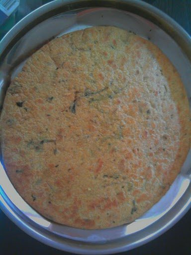

Prep25 min
Cook35 min
Active60 min
Plus20 min resting
Serves10
Difficultymoderate
Contains: gluten
Checked against the ingredient list for ten allergens: milk, egg, fish, crustaceans, tree nuts, peanuts, sesame, mustard, soy and gluten. Brands vary, so read the label on anything new to you.
Ingredients
Quantities for 10.
- 300g Atta
- 2 tbsp Besanoptional
- 1 tsp Ajwain
- 1/2 tsp Turmeric
- 1 tsp Chilli Powderoptional
- 3 tbsp Neutral Oil
- 170ml Water
- 1 tsp Salt
Cookware
tawa
Before you start
- The pressing is the technique. Each round is roasted slowly and pressed with a cloth-covered pad until every bubble is flattened out.
- Roll them thinner than you think reasonable. A thick khakhra is a chapati.
Method
- Make a stiff dough with everything and knead 8 minutes. Rest 20 minutes.Stiffer than chapati dough. A soft dough will not roll thin enough.
- Roll each ball out as thin as possible, at least 20cm across.
- Cook on a low tawa for 30 seconds a side to set it.
- Now press continuously with a folded cloth, moving around the round, for 2 minutes a side.Low heat and constant pressure. Rushing it gives a leathery khakhra with soft spots.
- It is done when it is uniformly pale brown, rigid and free of any give.
- Cool completely on a rack before stacking.
Storage
Keeps 3 weeks in an airtight tin at room temperature. If they soften, 3 minutes in a low oven restores the snap.
Nutrition Good estimate
Low protein: 4 g a serving, 10% of the calories
| Per serving39 g | Per 100 g | |
|---|---|---|
| Calories | 150 kcal | 389 kcal |
| Protein | 3.6 g | 9 g |
| Carbohydrate | 24.6 g | 64 g |
| of which sugars | 0.7 g | 2 g |
| Fibre | 4.5 g | 12 g |
| Fat | 4.9 g | 13 g |
| of which saturated | 0.6 g | 2 g |
| of which unsaturated | 4.0 g | 11 g |
Estimated from raw ingredients using USDA FoodData Central.
Times, yields, allergens and nutrition are guidance. Use your own judgement on doneness and on storing. More in About.